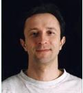

Livio Vodopivec
Jag har sedan skolåldern varit intresserad av att teckna, och var en gång ganska bra på detta.
Fick prova på fotografering på gymnasiet och blev helt såld. Tyckte det var kul med mörkrumsarbetet, att se
bilden växa fram i framkallaren. Glömde bort teckningen och fortsatte att fotografera allt möjligt. De första
årens kopior i svartvitt är inga bra kopior kvallitétsmässigt. Gråa och tråkiga. Sakta men säkert arbetade jag
mig fram till bra svartvita kopior. Till stor del är jag självlärd. Har dock gått en del fotokurser i mörkrumsteknik,
studioteknik och modellfoto. Har då och då gått tillbaka till teckning och då framför allt kroki. Har även testat
oljemålning. Dock tycker jag fotografering är roligast. Jag har fotograferat sedan 1974 med små korta avbrott.
Det som intresserar mig mest sedan åttiotalet är porträtt och modellfotografering i svartvitt. Får då och då
ett begär att fotografera naturen i framför allt svartvitt. detta är ett kul avbrott i allt annat fotograferande
och samtidigt en utmaning.
Jag försöker alltid att få med känsla av rymd, linjer, skuggspel och ibland humor
eller sarkasm i bilderna jag gör. Jag tycker att fotografi mycket väl kan betracktas som konst. Det är denna typ
av fotografi som jag försöker skapa. Många misslyckande och få riktigt bra bilder. Konst är ingen dussinvara.
Det är ingen konst om det vore lätt, är kanske inte helt fel uttryckt.
Tänk att i det ögomblicket då du
trycker på kamerans avtryckare fastnar det reflekterade ljuset från det som finns framför kameran på en film
med ljuskänsligt silversalt. Har finns ett embryo till en bild. Det är ingen bild fören du framkallat filmen
i ett kemiskt bad. Där blir silversaltet som håller på informationen från ljuset aktiverat och börjar växa.
Det växer tills du bestämmer att nu är det tillräckligt stort för att det skall vara en bild (kopieringsbar bild).
Därefter kan du förändra bilden när du kopierar (göra pappersbild). Att göra en bild på kemisk väg är
något speciellt.
Nu är det inte så att jag ogillar databehandling av bilder utan jag gör mina färgbilder
och en del svartvita bilder med hjälp av datorn. Dock går jag via ett negativ eller ett dia. Det mesta som går
att göra i datorn har man sedan årtionden kunnat göra på kemisk väg, om än bökigare och tidskrävande. Man skall
dock ha klart för sig att en dålig bild sällan blir en bra bild för att man manipulerar den i dator eller på
kemisk väg.
Fotograferar nu även digitalt då det underlättar framtagandet av färgbilder.
Tekniker jag använder
Jag fotograferar både med småbild- och mellanformatfilm samt digitalt (fullformat).
Som småbildskamera (film) använder jag för tillfället två kamerahus Chinon CP7m och Chinon CE5. Som digital
kamera använder jag Pentax K-1. Tillgängliga objektiv: SMC Pentax FA 1,4/50. Sigma super-wide II 2,8/24 AF.
Tamron SP Di AF 90/2,8 macro 1:1 (272E). Tamron adaptall2 3,5/200 (04B). Har lite roligt med några gamla objektiv
som SMC Pentax 1,8/55, Auto CHINON MC 1,7/50, samt ombygda Carl Zeiss Planar 1,7/50 T* och Prakticar 2,8/135 MC
Pentacon. För mellanformat använder jag ett kamerahus som heter Kiev 88. Detta är en Sovietisk kopia på första
Hasselbladaren. Tungt kamerahus men som klarar det man begär av det. Till detta har jag tre objektiv från Carl
Zeiss JENA (dåvarande DDR), Sonnar 180/2,8, Biometar 80/2,8 och Flektogon 50/4.
Jag framkallar all
svartvit film själv. Använder Agfapan APX100. Denna film både för småbild och mellanformat. Jag framkallar dem
i Rodinal. Använder framkallningsdoser från JOBO. Har fortfarande kvar frusen APX100 och APX 25 (135 och 120 film).
Då jag gör kopior använder jag DURST M600 med färghuvud och EL-Nikkorobjektiv som förstoringsapparat. Papperet är
ett multigradeplastpapper. Papperet framkallar jag i egenhändigt blandad framkallare. Receptet hittar du på artiklar/info.
För att fotografera i färg använde jag oftast negativ film som Fujicolor Superia 200. Utställnings och tävlingsbilder
i färg brukar jag oftast göra som påsiktsbilder (pappersbilder). Detta gör jag själv genom att skanna in filmen på
Minolta Dimagé scan dual II och större negativ i Canoscan 9950F, bearbeta dem i en Mac och slutligen skriva ut dem
på en Epson photo R285. Bäst resultat har jag uppnått med Epsons papper som heter Matte paper-heavyweight.
Vill du stå modell?
För att vara modell behöver du inte se ut på ett speciellt sätt. Det viktigaste är att du tycker det är roligt
eller spännande och att du har utstrålning, glimten i ögat. Du kan vara kille eller tjej, skall känna dig trygg
i dig själv, ha personlighet och utstråla välmående. Du kan vara helt oerfaren av modellarbete. Du kanske vill
bygga upp en egen portfolio, eller helt enkelt vill ha en serie med speciella eller tuffa bilder på dig själv.
Om du kan tänka dig att prova på som modell, eller behöver bilder på dig själv eller gillar det bildskapande jag
gör är du välkommen att kontakta mig. Klicka på kontakt. Jag brukar inte ta betalt för fotograferingen om bilderna
som gjorts kan användas i tävlingar/internationella saloner. Jag fotograferar då digitalt och du får en CD med
samtliga bilder. Du får enbart använda bilderna till dig själv som exv portfolio. Bildanvändningskontrakt skrivs.
Du skall vara myndig.